Photos: Winter walk
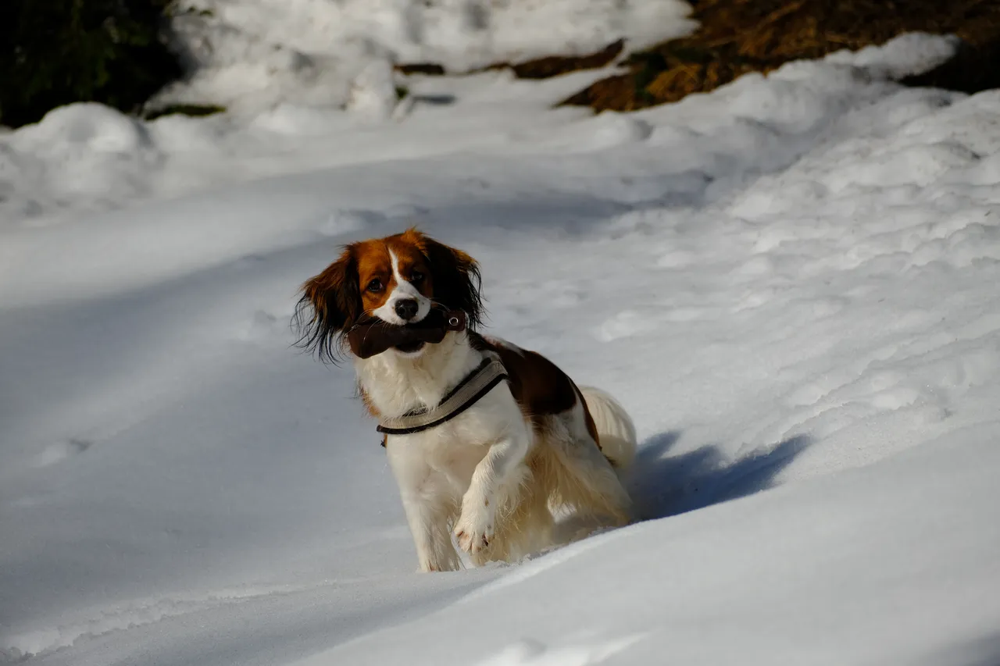
= 64rem) min(100vw - 18.5rem, (100vh - 2.5rem) * 1.500), (width >= 50rem) and (orientation: landscape) min(100vw - 18.5rem, (100vh - 2.5rem) * 1.500), (aspect-ratio > 8/5) min(100vw - 18.5rem, (100vh - 2.5rem) * 1.500), min(100vw, (100vh - 10rem) * 1.500)" width="1280" height="853" alt="Winter walk, photo 1" loading="eager" fetchpriority="high" style="background-image:url(../img/2023-12-winter-walk/01-dog-240.webp)">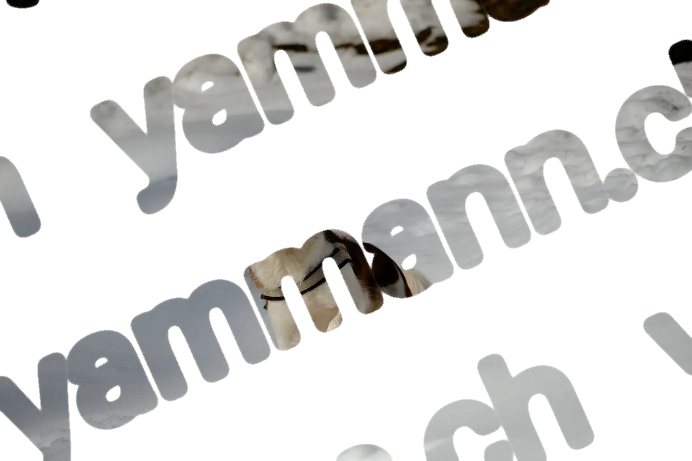
= 64rem) min(100vw - 18.5rem, (100vh - 2.5rem) * 1.500), (width >= 50rem) and (orientation: landscape) min(100vw - 18.5rem, (100vh - 2.5rem) * 1.500), (aspect-ratio > 8/5) min(100vw - 18.5rem, (100vh - 2.5rem) * 1.500), min(100vw, (100vh - 10rem) * 1.500)" width="1280" height="853" alt="" class="patch" loading="eager" fetchpriority="high">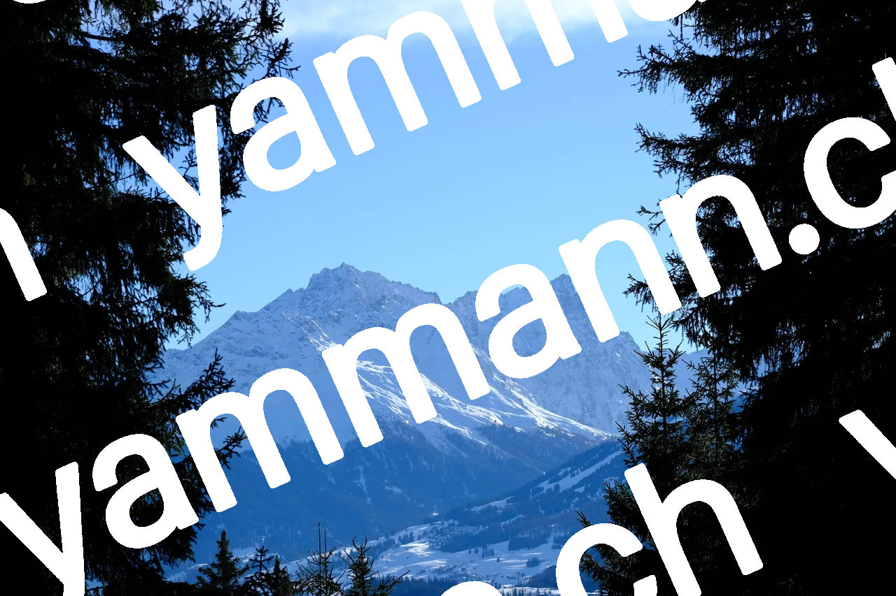
= 64rem) min(100vw - 18.5rem, (100vh - 2.5rem) * 1.500), (width >= 50rem) and (orientation: landscape) min(100vw - 18.5rem, (100vh - 2.5rem) * 1.500), (aspect-ratio > 8/5) min(100vw - 18.5rem, (100vh - 2.5rem) * 1.500), min(100vw, (100vh - 10rem) * 1.500)" width="1280" height="853" alt="Winter walk, photo 2" loading="lazy" style="background-image:url(../img/2023-12-winter-walk/02-mountain-view-240.webp)"> = 64rem) min(100vw - 18.5rem, (100vh - 2.5rem) * 1.500), (width >= 50rem) and (orientation: landscape) min(100vw - 18.5rem, (100vh - 2.5rem) * 1.500), (aspect-ratio > 8/5) min(100vw - 18.5rem, (100vh - 2.5rem) * 1.500), min(100vw, (100vh - 10rem) * 1.500)" width="1280" height="853" alt="" class="patch" loading="lazy">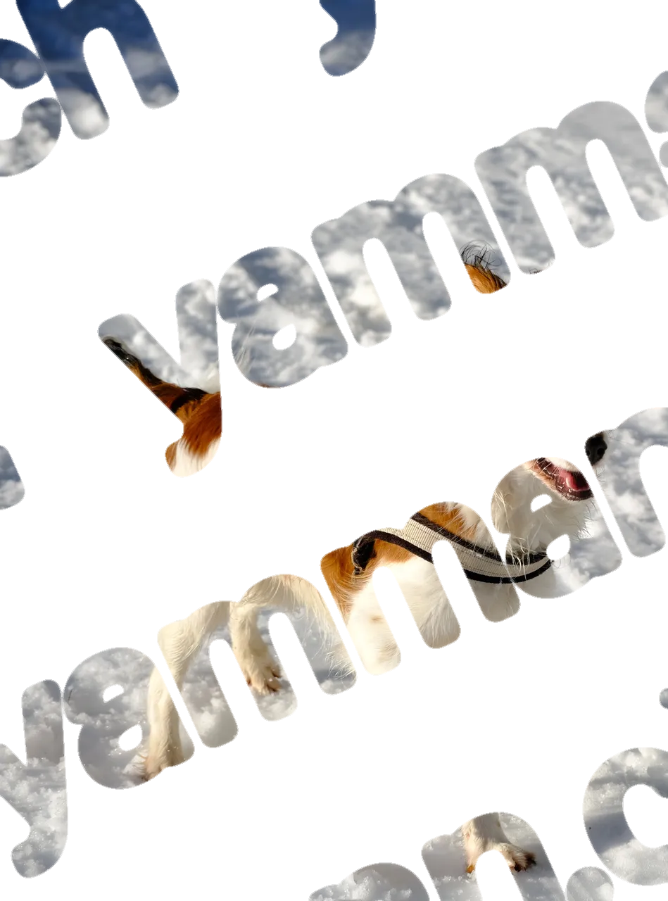
= 64rem) min(100vw - 18.5rem, (100vh - 2.5rem) * 0.742), (width >= 50rem) and (orientation: landscape) min(100vw - 18.5rem, (100vh - 2.5rem) * 0.742), (aspect-ratio > 8/5) min(100vw - 18.5rem, (100vh - 2.5rem) * 0.742), min(100vw, (100vh - 10rem) * 0.742)" width="949" height="1280" alt="" class="patch" loading="lazy">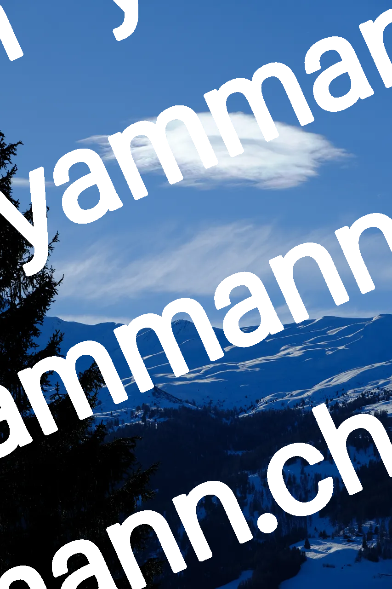
= 64rem) min(100vw - 18.5rem, (100vh - 2.5rem) * 0.667), (width >= 50rem) and (orientation: landscape) min(100vw - 18.5rem, (100vh - 2.5rem) * 0.667), (aspect-ratio > 8/5) min(100vw - 18.5rem, (100vh - 2.5rem) * 0.667), min(100vw, (100vh - 10rem) * 0.667)" width="853" height="1280" alt="Winter walk, photo 4" loading="lazy" style="background-image:url(../img/2023-12-winter-walk/04-mountain-view-2-240.webp)"> = 64rem) min(100vw - 18.5rem, (100vh - 2.5rem) * 0.667), (width >= 50rem) and (orientation: landscape) min(100vw - 18.5rem, (100vh - 2.5rem) * 0.667), (aspect-ratio > 8/5) min(100vw - 18.5rem, (100vh - 2.5rem) * 0.667), min(100vw, (100vh - 10rem) * 0.667)" width="853" height="1280" alt="" class="patch" loading="lazy">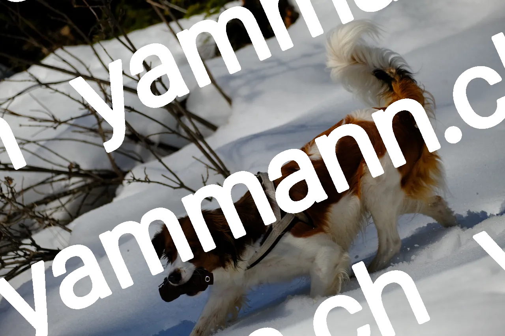
= 64rem) min(100vw - 18.5rem, (100vh - 2.5rem) * 1.500), (width >= 50rem) and (orientation: landscape) min(100vw - 18.5rem, (100vh - 2.5rem) * 1.500), (aspect-ratio > 8/5) min(100vw - 18.5rem, (100vh - 2.5rem) * 1.500), min(100vw, (100vh - 10rem) * 1.500)" width="1280" height="853" alt="Winter walk, photo 5" loading="lazy" style="background-image:url(../img/2023-12-winter-walk/05-dog-slope-240.webp)">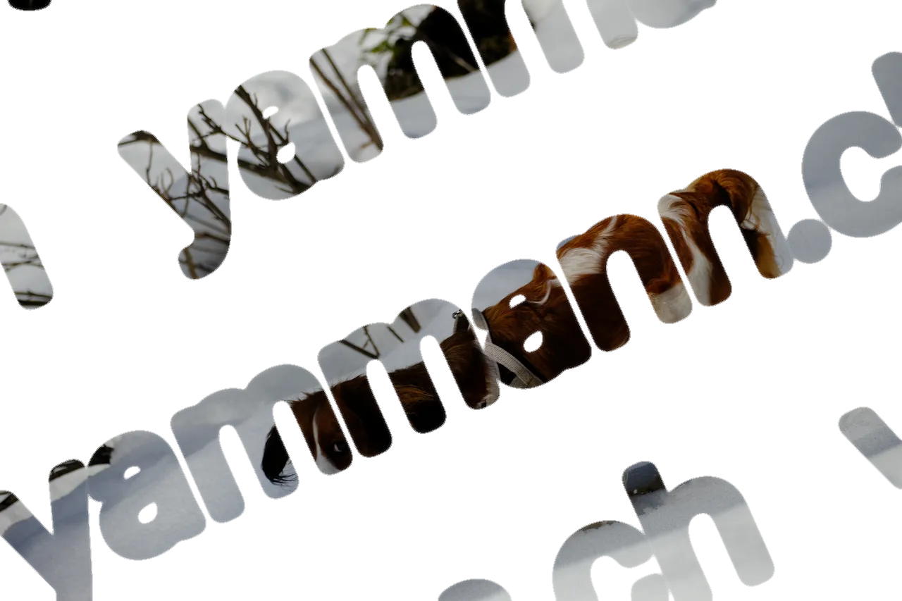
= 64rem) min(100vw - 18.5rem, (100vh - 2.5rem) * 1.500), (width >= 50rem) and (orientation: landscape) min(100vw - 18.5rem, (100vh - 2.5rem) * 1.500), (aspect-ratio > 8/5) min(100vw - 18.5rem, (100vh - 2.5rem) * 1.500), min(100vw, (100vh - 10rem) * 1.500)" width="1280" height="853" alt="" class="patch" loading="lazy">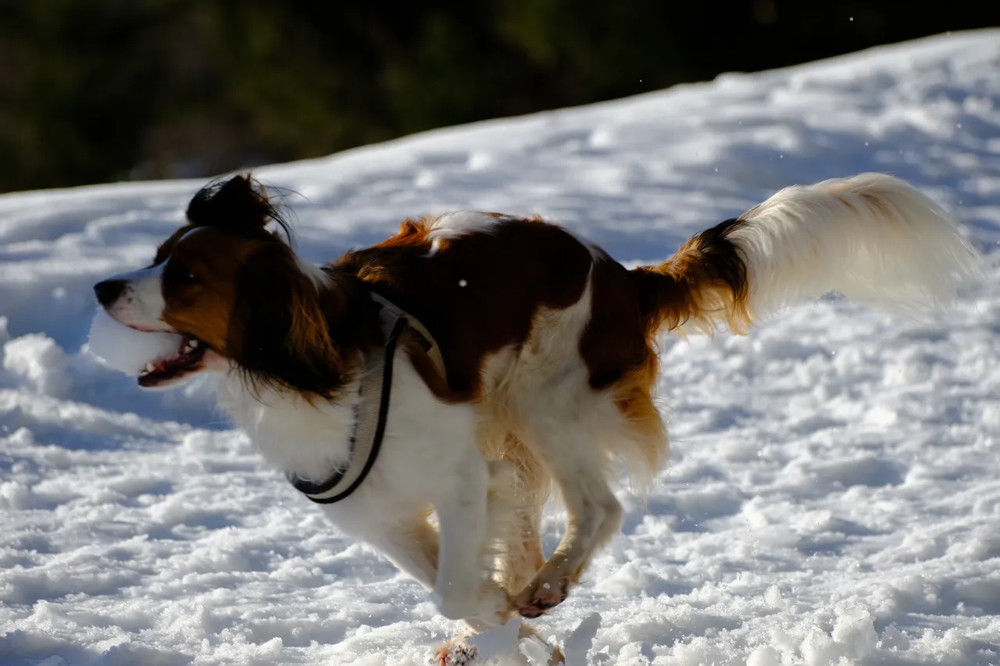
= 64rem) min(100vw - 18.5rem, (100vh - 2.5rem) * 1.500), (width >= 50rem) and (orientation: landscape) min(100vw - 18.5rem, (100vh - 2.5rem) * 1.500), (aspect-ratio > 8/5) min(100vw - 18.5rem, (100vh - 2.5rem) * 1.500), min(100vw, (100vh - 10rem) * 1.500)" width="1280" height="853" alt="Winter walk, photo 6" loading="lazy" style="background-image:url(../img/2023-12-winter-walk/06-dog-action-240.webp)">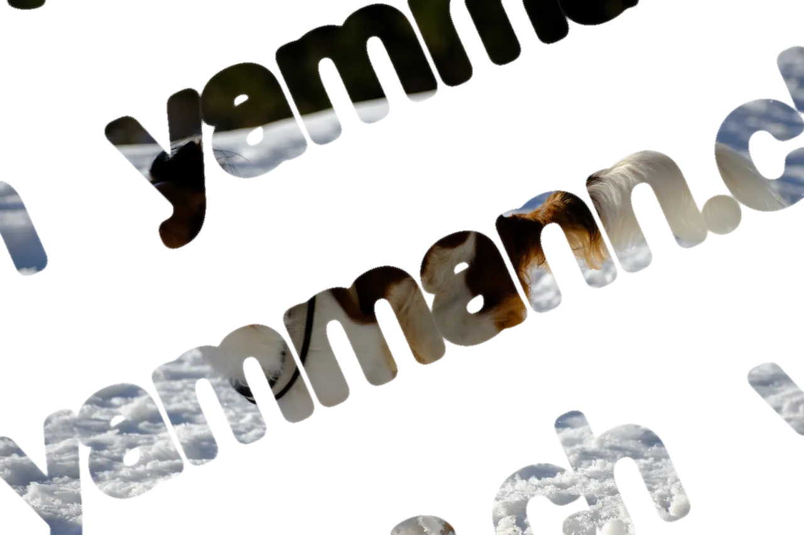
= 64rem) min(100vw - 18.5rem, (100vh - 2.5rem) * 1.500), (width >= 50rem) and (orientation: landscape) min(100vw - 18.5rem, (100vh - 2.5rem) * 1.500), (aspect-ratio > 8/5) min(100vw - 18.5rem, (100vh - 2.5rem) * 1.500), min(100vw, (100vh - 10rem) * 1.500)" width="1280" height="853" alt="" class="patch" loading="lazy">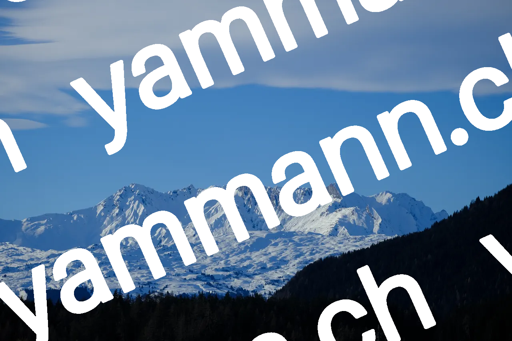
= 64rem) min(100vw - 18.5rem, (100vh - 2.5rem) * 1.500), (width >= 50rem) and (orientation: landscape) min(100vw - 18.5rem, (100vh - 2.5rem) * 1.500), (aspect-ratio > 8/5) min(100vw - 18.5rem, (100vh - 2.5rem) * 1.500), min(100vw, (100vh - 10rem) * 1.500)" width="1280" height="853" alt="Winter walk, photo 7" loading="lazy" style="background-image:url(../img/2023-12-winter-walk/07-mountain-view-3-240.webp)">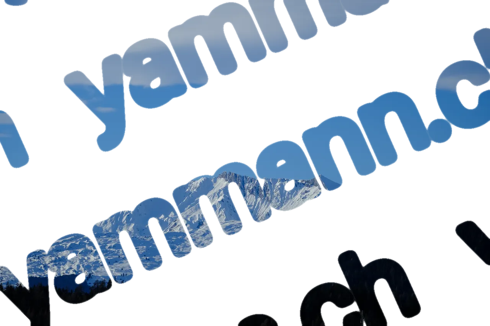
= 64rem) min(100vw - 18.5rem, (100vh - 2.5rem) * 1.500), (width >= 50rem) and (orientation: landscape) min(100vw - 18.5rem, (100vh - 2.5rem) * 1.500), (aspect-ratio > 8/5) min(100vw - 18.5rem, (100vh - 2.5rem) * 1.500), min(100vw, (100vh - 10rem) * 1.500)" width="1280" height="853" alt="" class="patch" loading="lazy">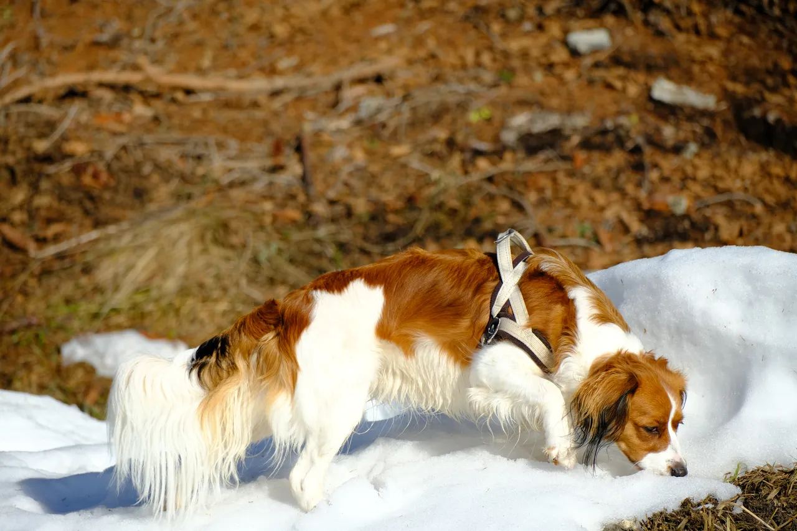
= 64rem) min(100vw - 18.5rem, (100vh - 2.5rem) * 1.500), (width >= 50rem) and (orientation: landscape) min(100vw - 18.5rem, (100vh - 2.5rem) * 1.500), (aspect-ratio > 8/5) min(100vw - 18.5rem, (100vh - 2.5rem) * 1.500), min(100vw, (100vh - 10rem) * 1.500)" width="1280" height="853" alt="Winter walk, photo 8" loading="lazy" style="background-image:url(../img/2023-12-winter-walk/08-dog-sniffing-240.webp)">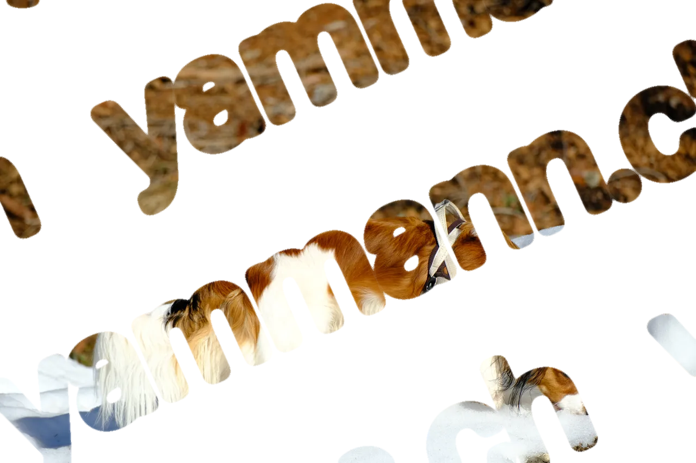
= 64rem) min(100vw - 18.5rem, (100vh - 2.5rem) * 1.500), (width >= 50rem) and (orientation: landscape) min(100vw - 18.5rem, (100vh - 2.5rem) * 1.500), (aspect-ratio > 8/5) min(100vw - 18.5rem, (100vh - 2.5rem) * 1.500), min(100vw, (100vh - 10rem) * 1.500)" width="1280" height="853" alt="" class="patch" loading="lazy">